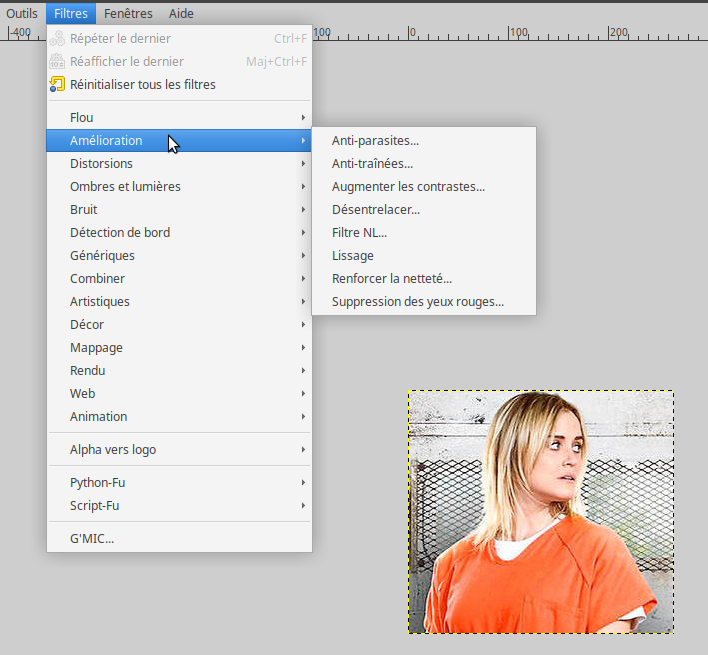
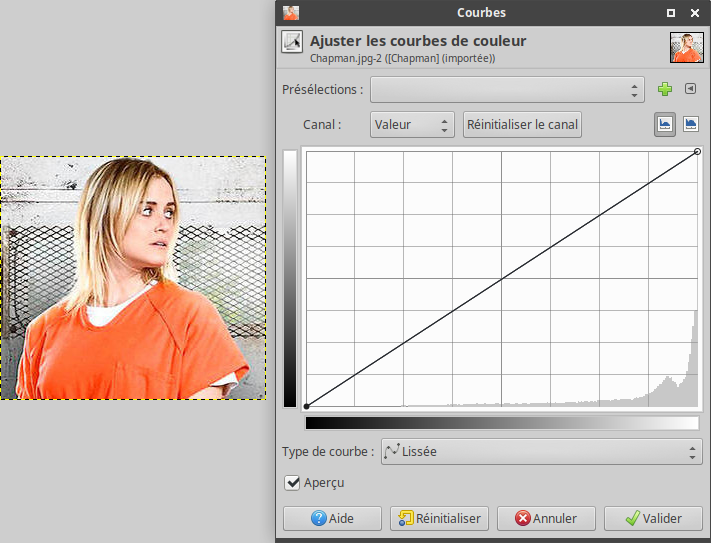
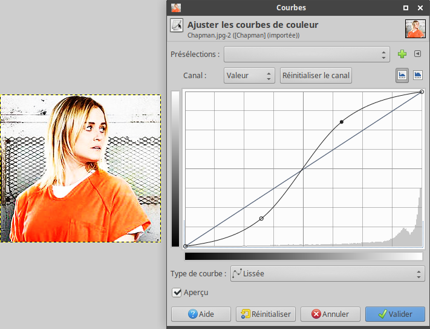

Appliquer un traitement à une image
Un fichier image contient les valeurs des composantes (rouge, vert, bleu) de chaque pixel. En modifiant ces valeurs, on modifie la couleur des pixels de l'image. Souvent, on applique une formule mathématique pour changer les valeurs des composantes d'un pixel à partir de ces valeurs ou des valeurs des composantes des pixels voisins. On parle alors de filtre.
Avec un logiciel adapté
Des logiciels de retouche permettent d'appliquer ces filtres. Voici par exemple quelques filtres proposés par le logiciel libre Gimp. 
Ce logiciel permet par exemple de modifier le contraste de l'image, sa luminosité, ...  
Avec Python
Il est possible de créer des filtres en utilisant un langage de programmation. En python, il faut commencer par importer un module qui contient toutes les fonctions pour traiter une image. Il s’agît du module PIL. Pour importer ce module, il suffit d’ajouter la ligne :
from PIL import Image
Ensuite, pour ouvrir l’image Chapman.jpg, on utilise l’instruction :
{kind=link}
img = Image.open("Chapman.jpg")
On peut désormais accéder aux informations sur les pixels de cette image. Par exemple, on peut récupérer le nombre de pixels sur la largeur et sur la hauteur de l’image :
largeur, hauteur = img.size
print(largeur, "x", hauteur)
On en profite donc pour créer une image de même taille que l’image de départ afin d’y enregistrer les traitements que l’on va effectuer.
imgR = Image.new("RGB", (largeur, hauteur))
Enfin, le traitement se fait à l’aide d’une double boucle qui permet de parcourir toutes les lignes et toutes les colonnes de l’image. Dans cette double boucle, l’instruction R, V, B = img.getpixel((x, y)) permet de récupérer les valeurs des composantes du pixel placé à la ligne x et à la colonne y, alors que l’instruction img.putpixel((x, y), (R, V, B)) permet d’écrire les valeurs des composantes.
Voici un exemple où l’on ne garde que la composante rouge de l’image :
for x in range(largeur) :
for y in range(hauteur) :
R, V, B = img.getpixel((x, y))
imgR.putpixel((x, y), (R, 0, 0))
Pour finir, on peut enregistrer le résultat grâce à l’instruction :
imgR.save("ChapmanRouge.png")
Réalisation de quelques filtres
Sur les composantes des images
- uniquement la composante verte
- uniquement la composante bleue
Négatif
Noir et Blanc / Niveau de gris
Le gris s’obtient en donnant à un pixel la même valeur à ces trois composantes. Une méthode pour convertir une image en couleur en une image en niveaux de gris est de remplacer les valeurs des trois composantes par la moyenne de ces valeurs.
Une image en noir en blanc est composée uniquement de pixels noirs et de pixels blancs.
-
les pixels qui ont un niveau de gris inférieur à 128 seront remplacés par des pixels noirs ;
les autres par des pixels blancs.
Sin City
Le film Sin City est un film à la frontière du noir et blanc (niveaux de gris pour être plus précis) et de la couleur. En effet, sur chaque séquence, une seule couleur est conservée, les autres sont converties en niveau de gris. Par exemple, au moment où l'actrice principale apparaît sur le balcon d'un gratte-ciel, toute l'image est en niveaux de gris à l'exception de la robe rouge de l'actrice. Cela apporte une ambiance particulièrement sombre au film.
Vous utiliserez l'image London.jpg ou bien l'image Londres.jpg.
{kind=link}
{kind=link}